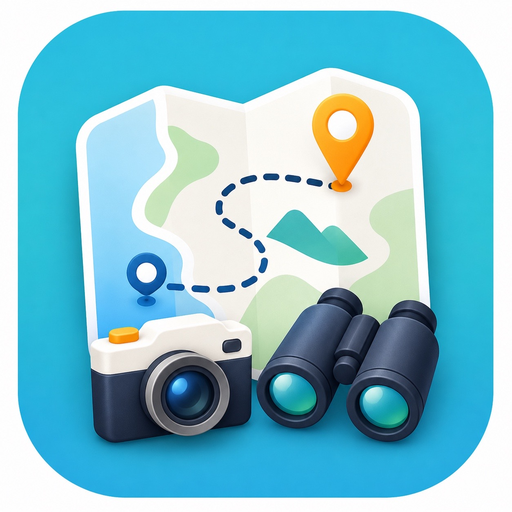

Toeristische stadsquiz
Stadsopdracht
Jouw stad wordt het spel.

Toeristische stadsquiz
Jouw stad wordt het spel.
Stadsopdracht maakt van elke stadswandeling een interactieve route.
Bij elke stop wacht een nieuwe opdracht.
Elke opdracht laat je beter kijken naar pleinen, bruggen, gebouwen en details.
Vragen ontgrendelen zodra je op locatie bent, niet eerder.
Elke keer een nieuwe interactieve route, waar jij ook bent.
Kies een route en ontdek de stad stap voor stap.
Stadsroutes met opdrachten
Koop een route voor een paar euro, open hem direct op je telefoon en voer bij elke stop een korte opdracht uit. Zo kijk je beter naar pleinen, bruggen, oude stadsdelen en de kleine details die je normaal mist.
Ontgrendel een route en ontdek onderweg welke opdrachten bij de plekken horen.
Bekijk routesShop
Webapp
Kies een tour om de interactieve opdrachten te bekijken.
Nog geen tour geselecteerd.